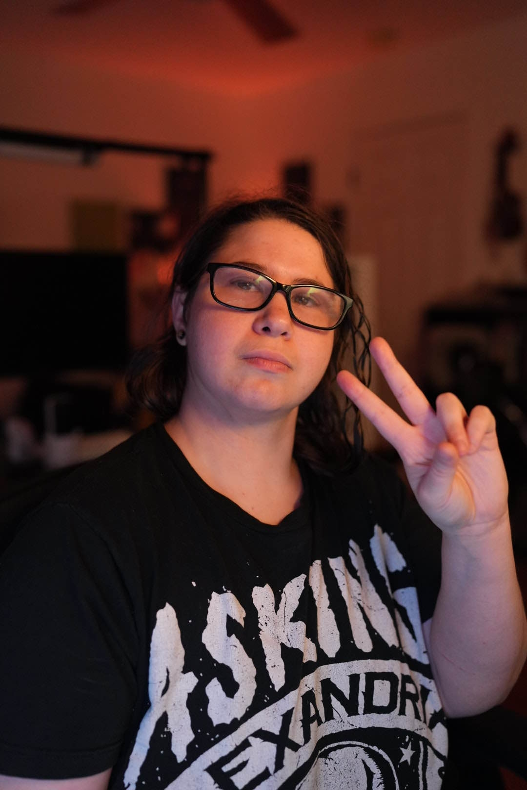

"As a neurodivergent Twitch Affiliate and variety streamer, I thrive on embracing my unique perspective and channeling it into everything I do. I'm deeply passionate about cosplay, photography, video editing, digital art, video games, coding, and crafting immersive audio sound effects. Join me on my creative journey as I blend these passions to bring you an unforgettable, engaging experience!"